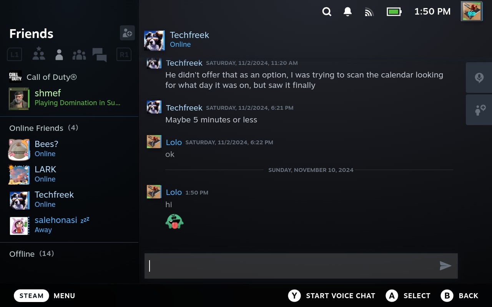
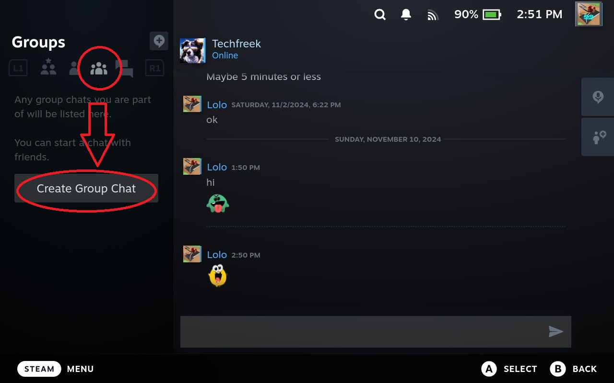
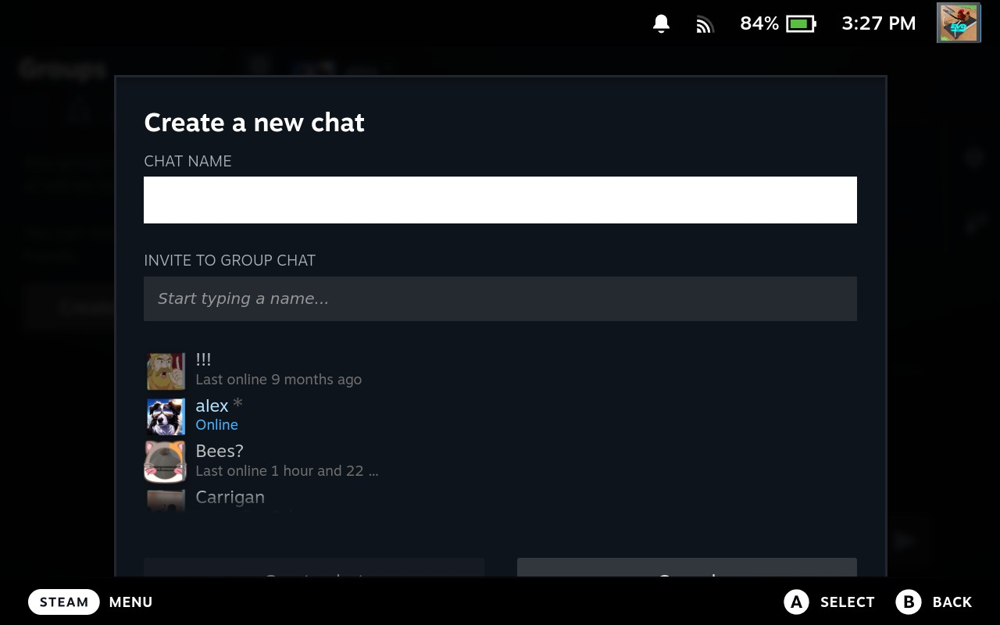
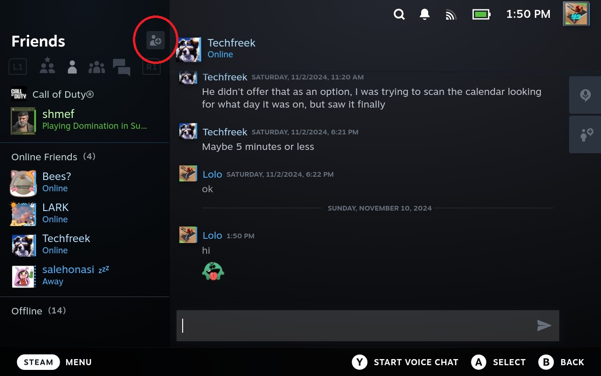
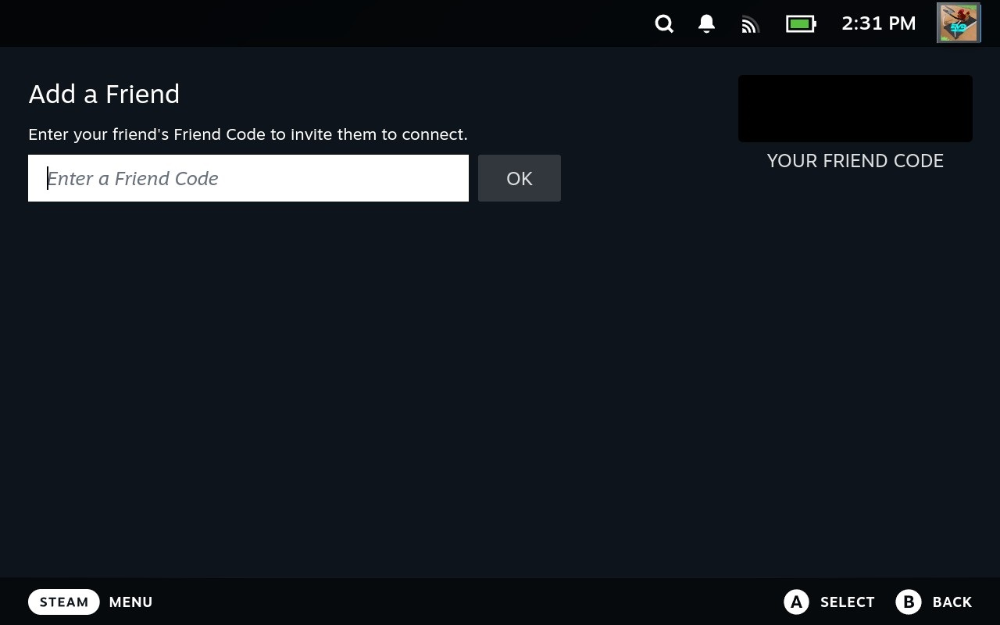

7. Friends and Chat
7.1 Accessing the Friends and Chat Menu
With the Steam Deck, you have access to your and can with your .
To access the , press the button.
Then, select .

Figure 7.1: Friends and Chat located in the Steam Menu
7.2 Friends List and Chatting
In the Friends and Chat Menu, your friends will be listed by who is , who is , and who is . Those playing a game will also have the name of the game above their Username and Profile Picture.
Figure 7.2: Steam Chat with Friends
You can chat with your Friends by typing via the On-Screen Keyboard, or press and start a .
To start a chat with several Friends, go to the tab.
Select .
Figure 7.3: The Group Chat Menu
Create a name for your new by typing it into the dialogue box.
Invite Friends to your Group Chat by typing their names into the dialogue box or by selecting them from the list.
Figure 7.4: Creating a new Group Chat.
7.3 Adding a Friend
To add someone as a Friend, go to the tab (it defaults to upon opening the Friends and Chat Menu).
Select the button (an icon of a person with a plus sign.)
Figure 7.5: The Add a Friend button.
Enter in their into the dialogue box.
Figure 7.6: Adding a Friend via their Friend Code.
7.4 Managing Friends
There are several things you can do in the menu. To access this menu, hover over a Friend's Username in the Friends Menu. Then, press the button.
From this menu, you can:
- Send them a message
- Start a
- View their
- Find a game to play together
- Trade
For further options, select from the menu that pops up.
From this menu, you can:
- Give them a that will replace their Username only to your view
- Favorite a Friend so they show up in
- Categorize them into different
- Change the settings for this Friend (what sound to play when they join a game, etc.)
- Remove this Friend from your Steam Friends
- View their to see their former Usernames
- And finally, you can from this User
Figure 7.7: Adding a Friend to Favorites.
Next Section
Back to Table of Contents